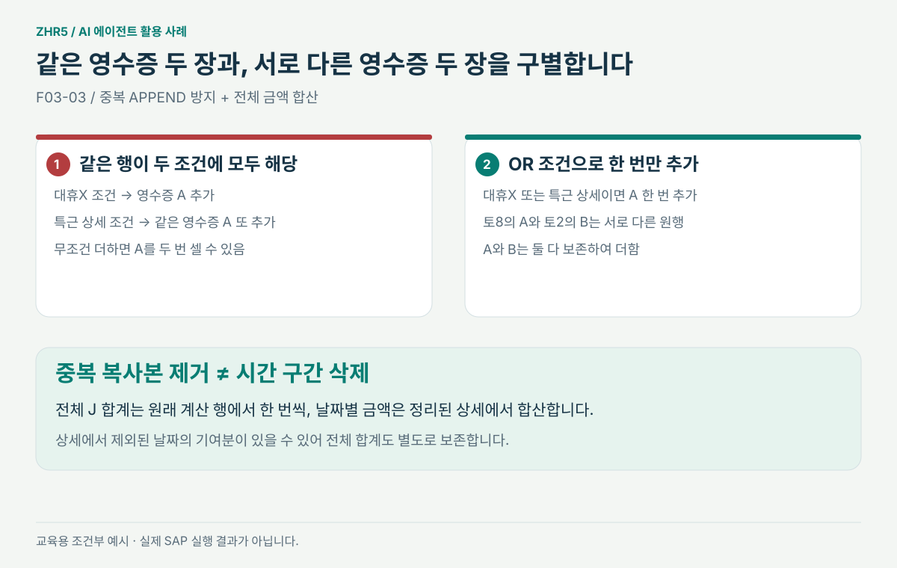
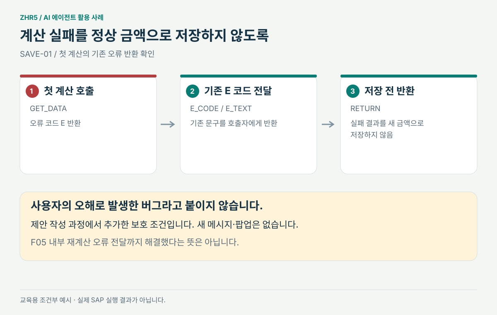
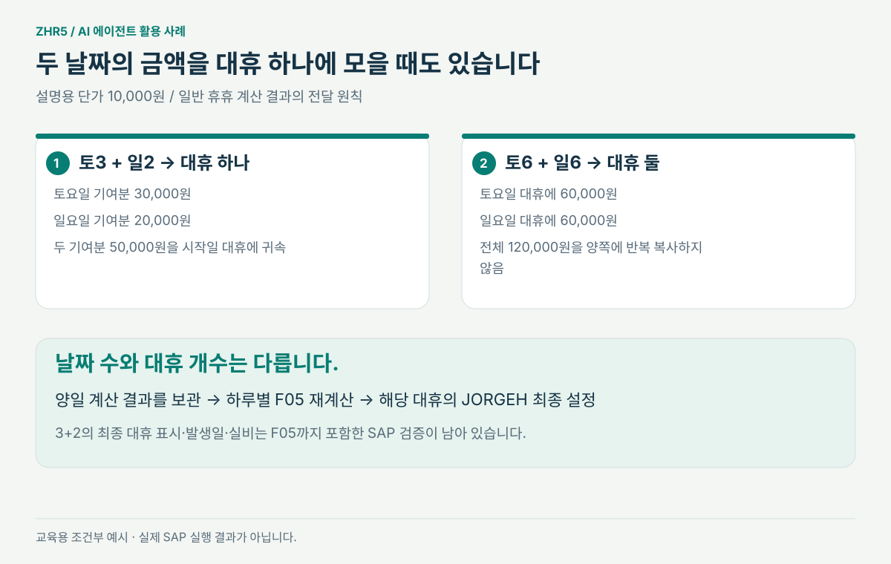

코드 옆에 놓은
생각의 변화와 발견 과정
원본은 변경하지 않았습니다. 왼쪽은 실제 원본 발췌, 오른쪽은 별도로 작성한 제안 사본입니다. 이 보고서는 기존 제안 코드를 교육용으로 설명하며 새로운 SAP 수정 범위를 추가하지 않습니다.
유지
시간 분할 · NORM 산식 · 비휴휴 계산 · 정산 확정취소 · 시차 B 정책 확인 상태
제안
현재 계산 결과 직접 전달 · 날짜별 합산 · 새 JORGEH 복사 · 첫 계산 E 반환
오른쪽 줄번호는 전체 제안 사본 기준입니다. 복사 버튼에는 줄번호가 포함되지 않습니다. 각 발췌는 독립 프로그램이 아니며 기존 구간을 교체하는 문맥입니다. 8개 구간은 함께 검토할 한 변경안입니다.
새 신청은 빈 계산 종이에서 시작
초기화 보완 · 사용자 제안의 적용 대상 구분
새 주문을 적을 종이를 비웁니다. 공유 서랍의 옛 영수증을 치우는 동작과는 다릅니다.
당시 이해·질문
“CLEAR나 REFRESH로 해소될 것 같다”는 제안이 있었습니다. 메모리 초기화와 DB 행 삭제를 구분해야 했습니다.
AI가 확인한 근거
AI는 LS/LT 작업 변수와 MODIFY 대상인 DB 테이블을 구별했습니다. 기존 반환 상세는 재사용하되 호출 시작에 비웁니다.
수정 결정과 목적
PT_ZDAEH와 금액 누계를 초기화합니다. 이 REFRESH가 과거 DB 행을 지우는 것은 아닙니다.


LZHR008_2F03.abap · 원본 L5534–5537 → 제안 L5534–5539
DATA: lt_zhrdaehuamt TYPE TABLE OF zhrdaehuamt.DATA: ls_zhrdaehuamt LIKE LINE OF lt_zhrdaehuamt. CLEAR: p_zemcwk_o, p_ztoich_o, p_ztomoh_o, p_zdaeh_o.* 이번 호출에서 반환할 대휴 상세와 정산금액을 초기화한다.* 정산금액 전달에 사용하던 임시 DB용 변수는 삭제한다. REFRESH pt_zdaeh. CLEAR lv_zjorgehamt. CLEAR: p_zemcwk_o, p_ztoich_o, p_ztomoh_o, p_zdaeh_o.개발자를 위한 적용 메모
- 기존 FORM의 TABLES 인수 PT_ZDAEH를 그대로 사용한다. 새 전역 캐시나 매개변수를 만들지 않는다.
- REFRESH는 메모리 내부 테이블을 비우는 명령이다. ZHRDAEHUAMT의 DB 행을 삭제하는 처리가 아니다.
- 시간외 입력 검사와 기존 출력 플래그 초기화는 유지한다.
계산만 해도 쓰이는 공유 서랍을 거치지 않기
사용자 확인 전제 · DB 잔존의 실제 지속 여부는 미검증
공유 서랍에 넣었다 다시 꺼내는 대신, 계산한 영수증을 같은 업무 담당자에게 바로 건넵니다.
당시 이해·질문
사용자는 “계산해서 임시 저장한 금액은 곧바로 읽고 삭제한다”고 생각했다고 밝혔습니다.
AI가 확인한 근거
F06의 화면 재계산 → GET_DATA → F03 쓰기를 추적했고, 삭제는 SAVE의 특정 조회 뒤에 있음을 확인했습니다. 사번·날짜 키에는 이번 신청 여부가 없습니다.
수정 결정과 목적
임시 DB 쓰기를 없애고 기존 함수 반환 통로로 현재 결과를 전달합니다. 읽기 교체인 SAVE-04/05와 함께 적용하는 안입니다.


LZHR008_2F03.abap · 원본 L5774–5782 → 제안 L5776–5778
"20231116-NGY-당번특근 .교대철야/휴일 양일 일 경우 양일 대휴 정산 금액을 별도로 저장 IF cs_overtime_data-ztomo EQ 'X'. LOOP AT lt_result INTO ls_result. ls_zhrdaehuamt-pernr = cs_overtime_data-pernr. ls_zhrdaehuamt-datum = ls_result-datum. ls_zhrdaehuamt-zjorgehamt = ls_result-zjorgehamt * 100. MODIFY zhrdaehuamt FROM ls_zhrdaehuamt. ENDLOOP. ENDIF.* 이번 계산 결과는 기존 반환 구조와 PT_ZDAEH로 직접 전달한다.* 신청끼리 공유하는 ZHRDAEHUAMT에는 기록하지 않는다.* 아래 LT_RESULT 반복문에서 금액과 대휴 상세를 집계한다.개발자를 위한 적용 메모
- 이 구간은 삭제 대상이다. 오른쪽은 삭제 후 남길 설명 주석이며 새로운 DB 명령이 아니다.
- ZTOMO를 만드는 처리, 날짜 경계 분리, 8+2 시간 분할과 NORM 호출은 그대로 둔다.
- 테이블 정의나 기존 잔존 행을 삭제하지 않는다. SAVE-04/05의 조회 제거와 반드시 함께 적용한다.
같은 영수증은 한 번, 서로 다른 구간은 모두 더하기
AI가 추가로 확인한 중복 위험 · 사용자 실수로 단정하지 않음
영수증 복사본 두 장은 한 번만 세되, 토요일 앞 8시간과 뒤 2시간은 서로 다른 근무이므로 둘 다 셉니다.
당시 이해·질문
사용자는 “세 구간의 합계가 반영돼야 한다”고 요청했습니다. 여기에 무조건 SUM만 적용하면 다른 중복 문제가 생깁니다.
AI가 확인한 근거
같은 계산 행이 대휴X 조건과 특근 상세 조건에 각각 걸려 두 번 APPEND될 수 있었습니다. 전체 금액 변수는 마지막 행으로 대입됐습니다.
수정 결정과 목적
두 APPEND 조건을 OR로 묶고 전체 합계는 원래 LT_RESULT의 각 행에서 한 번씩 구합니다. 상세에 빠진 합산형의 다른 날짜 기여분도 보존합니다.



LZHR008_2F03.abap · 원본 L5844–5861 → 제안 L5840–5849
*...// 대휴상세 발생정보 IF ls_result-zdaeh EQ 'X'. APPEND ls_result TO pt_zdaeh. ENDIF. *...// 대휴정산 실비 합계 lv_zjorgehamt = ls_result-zjorgehamt. ************************************ ZDWKTYPE 특근 N1 / 교대근로 철야 S1 양일 워킹DAY 여야함************************************ IF ls_result-zdaeh EQ '' AND* ( p_wktype = 'N2' OR p_wktype = 'S1' ) .* APPEND ls_result TO pt_zdaeh.* ENDIF. IF lv_ngt = 'Y'. APPEND ls_result TO pt_zdaeh. ENDIF.* 대휴 상세는 같은 계산 행을 한 번만 반환한다.* 두 조건이 모두 맞아도 APPEND는 한 번만 실행한다. IF ls_result-zdaeh EQ 'X' OR lv_ngt EQ 'Y'. APPEND ls_result TO pt_zdaeh. ENDIF. * 신청 전체의 정산금액을 원래 계산 행에서 합산한다.* 대휴 상세에 포함되지 않은 다른 날짜의 기여분도 더한다.* 뒤의 기존 반올림 및 * 100 반환 처리는 그대로 사용한다. ADD ls_result-zjorgehamt TO lv_zjorgehamt.개발자를 위한 적용 메모
- 기존 두 APPEND 조건의 합집합을 OR로 표현한다. 어느 조건에도 맞지 않던 행을 새로 상세에 넣지 않는다.
- 전체 합계는 PT_ZDAEH가 아니라 LT_RESULT의 각 원행에서 한 번씩 구한다. 3+2 합산 대휴처럼 한 날짜가 상세에서 빠질 수 있는 경우도 포함한다.
- L5906–5918의 기존 반올림과 출력 단위 변환은 유지한다. NORM의 0.5/1.5배 계산은 변경하지 않는다.
계산이 실패했으면 저장으로 넘어가지 않기
AI 추가 보완 · F05 내부 오류 전달까지 해결한 것은 아님
계산기에 오류 표시가 떴다면, 비어 있거나 옛날인 숫자를 새 정답처럼 장부에 쓰지 않습니다.
당시 이해·질문
이 구간에 대응하는 사용자 오해 진술은 없습니다. 제안 코드를 구체화하면서 추가한 보호 조건입니다.
AI가 확인한 근거
첫 GET_DATA가 LV_CODE/LV_TEXT를 돌려주지만 기존 SAVE는 그 자리에서 E 여부를 확인하지 않았습니다.
수정 결정과 목적
E이면 기존 오류 코드와 문구를 호출자에게 반환합니다. 새 메시지 번호나 팝업은 만들지 않습니다.



ZHR_52TM_GET_OVERTIME_SAVE.abap · 원본 L59–62 → 제안 L59–69
c_zdaeh = c_zdaeh. " 대휴 MOVE-CORRESPONDING is_zthrbs01 TO ls_zthrbs01. c_zdaeh = c_zdaeh. " 대휴 * 계산 오류일 때는 기존 오류 코드와 문구를 호출자에게 돌려준다.* 실패한 계산값을 새 정산금액으로 저장하지 않는다. IF lv_code+0(1) EQ 'E'. e_code = lv_code. e_text = lv_text. RETURN. ENDIF. MOVE-CORRESPONDING is_zthrbs01 TO ls_zthrbs01.개발자를 위한 적용 메모
- 설계 구체화 과정에서 추가한 최소 보완이다. 원본은 LV_CODE/LV_TEXT를 받지만 이 지점에서 E를 확인하지 않는다.
- 새 오류 번호·메시지·팝업을 만들지 않는다. 기존 웹/관리자 호출자가 확인하는 E_CODE/E_TEXT에 그대로 반환한다.
- 뒤의 키 설정과 DB 변경보다 먼저 반환한다. W/I/S의 기존 흐름은 바꾸지 않는다.
- F05 내부의 개별 재계산 오류 전달은 이번 두 소스 수정 밖의 기존 확인 사항이며, 이 구간만으로 모든 오류 경로를 검증했다고 주장하지 않는다.
계산서의 새 숫자를 저장 장부에도 옮기기
누락 구문 확인 · 실제 이전 값 유입 경로는 표본 검증 필요
계산서에는 60,000원, 장부에는 80,000원이 남는 틈을 막습니다. 이미 앞에서 고쳐 온 경로도 있다는 반례를 함께 봅니다.
당시 이해·질문
사용자는 새 실비 30,000원을 복사했다면 새 JORGEH 60,000원도 복사해야 한다고 범위를 확정했습니다.
AI가 확인한 근거
SAVE의 기존 복사 목록에서 JORGEH가 빠졌습니다. 다만 F06은 웹 신규·수정 공통으로 새 값을 먼저 복사하므로 모든 웹 수정이 오류라는 설명은 정정했습니다.
수정 결정과 목적
기존 MOVE 목록에 JORGEH 한 항목을 추가합니다. 정상 새 값 0도 복사하며 비휴휴 산식은 그대로입니다.


ZHR_52TM_GET_OVERTIME_SAVE.abap · 원본 L75–78 → 제안 L82–87
ls_overtime_data-zs_money TO ls_zthrbs01-zs_money, ls_overtime_data-zd_money TO ls_zthrbs01-zd_money, "2011.04. ls_overtime_data-zmoney TO ls_zthrbs01-zmoney, ls_overtime_data-zdaeh TO ls_zthrbs01-zdaeh, ls_overtime_data-zs_money TO ls_zthrbs01-zs_money, ls_overtime_data-zd_money TO ls_zthrbs01-zd_money,* 현재 신청의 새 정산금액도 복사한다. 정상 계산값 0도 반영한다. ls_overtime_data-jorgeh TO ls_zthrbs01-jorgeh, ls_overtime_data-zmoney TO ls_zthrbs01-zmoney, ls_overtime_data-zdaeh TO ls_zthrbs01-zdaeh,개발자를 위한 적용 메모
- 기존 MOVE 목록 안에 한 항목을 넣는다. 새 JORGEH가 0인지 여부로 복사를 생략하지 않는다.
- ES_OVERTIME_DATA-JORGEH는 이미 기존 출력 단위로 변환된 값이므로 여기서 다시 *100하지 않는다.
- 웹 신규·수정은 F06에서도 복사하지만, 공통 SAVE가 자신의 재계산 결과를 반영하도록 한다. 관리자에 계산을 복제하지 않는다.
줄의 순서 대신 실제 날짜로 묶기
사용자 질문으로 AI 예시·적용 범위를 정정한 핵심 구간
토요일 메모가 앞뒤로 떨어져 있어도 달력에는 토요일이 한 칸입니다. 메모 3묶음과 날짜 2개를 구별합니다.
당시 이해·질문
사용자는 “토8·일6 두 행인데 토요일 2시간이 어디서 나오나”라고 질문했습니다. AI가 토10·일6의 조건부 예시와 구분해 설명해야 했습니다.
AI가 확인한 근거
DAILY가 뒤 구간을 APPEND하면 토8→일6→토2가 될 수 있습니다. SAVE는 정렬 없이 인접 날짜 그룹을 세었습니다. 선택 CW 및 A 휴일에는 이 분할 설명을 적용하면 안 됩니다.
수정 결정과 목적
날짜·시작시각으로 정렬한 뒤 같은 날짜의 금액을 더합니다. 날짜 수와 실제 대휴 발생일 수를 따로 셉니다. 시간 분할 자체는 유지합니다.


ZHR_52TM_GET_OVERTIME_SAVE.abap · 원본 L116–150 → 제안 L125–174
*...// 대휴여부에 따라서 처리 lv_zdaeh_c = LINES( lt_zdaeh ). *..// 일자별로 합치기 DATA: lt_zdaeh_tmp TYPE TABLE OF zshr0121 WITH HEADER LINE. DATA: l_first , l_last, l_chg. DATA: l_time_e TYPE time. CLEAR: lt_zdaeh_tmp[], l_first, l_chg. IF lv_zdaeh_c > 1. LOOP AT lt_zdaeh INTO ls_zdaeh. IF l_first = ''. MOVE ls_zdaeh TO lt_zdaeh_tmp. ENDIF. l_first = 'X'. l_time_e = ls_zdaeh-zendtm. AT END OF datum. l_chg = 'X'. ENDAT. IF l_chg = 'X'. lt_zdaeh_tmp-zendtm = l_time_e. APPEND lt_zdaeh_tmp. CLEAR: l_first, l_chg. ENDIF. ENDLOOP. lt_zdaeh[] = lt_zdaeh_tmp[]. ENDIF.** // <<--- lv_zdaeh_c = LINES( lt_zdaeh ).* 날짜 묶음 수와 실제 대휴 발생일 수를 구분한다.* 기존 상세 구조를 사용하므로 DDIC나 함수 인수 추가가 없다. DATA: lt_zdaeh_day TYPE TABLE OF zshr0121, ls_zdaeh_day TYPE zshr0121, lv_daeh_days TYPE i. REFRESH lt_zdaeh_day. CLEAR: ls_zdaeh_day, lv_daeh_days. * 토8 / 일6 / 토2를 토8 / 토2 / 일6 순서로 정렬한다. SORT lt_zdaeh BY datum zbegtm zendtm. LOOP AT lt_zdaeh INTO ls_zdaeh. IF ls_zdaeh_day-datum IS INITIAL.* 첫 구간의 시작시각과 기존 휴게정보를 보관한다. MOVE ls_zdaeh TO ls_zdaeh_day. ELSEIF ls_zdaeh_day-datum EQ ls_zdaeh-datum.* 같은 날짜의 종료시각은 가장 늦은 시각을 사용한다. IF ls_zdaeh-zendtm GT ls_zdaeh_day-zendtm. ls_zdaeh_day-zendtm = ls_zdaeh-zendtm. ENDIF. * 금액만 더한다. 날짜나 다른 숫자 필드를 함께 더하지 않는다. ADD ls_zdaeh-zjorgehamt TO ls_zdaeh_day-zjorgehamt. IF ls_zdaeh-zdaeh EQ 'X'. ls_zdaeh_day-zdaeh = 'X'. ENDIF. ELSE.* 날짜가 바뀌면 앞 날짜를 확정하고 다음 날짜를 시작한다. APPEND ls_zdaeh_day TO lt_zdaeh_day. MOVE ls_zdaeh TO ls_zdaeh_day. ENDIF. ENDLOOP. * 마지막 날짜는 반복문이 끝난 뒤 한 번 추가한다. IF ls_zdaeh_day-datum IS NOT INITIAL. APPEND ls_zdaeh_day TO lt_zdaeh_day. ENDIF. lt_zdaeh[] = lt_zdaeh_day[]. * 이틀 근무라도 실제 대휴는 한 개일 수 있다. LOOP AT lt_zdaeh INTO ls_zdaeh WHERE zdaeh EQ 'X'. ADD 1 TO lv_daeh_days. ENDLOOP. * 기존 1일 / 2일 저장 분기에는 날짜 묶음 수를 사용한다. lv_zdaeh_c = LINES( lt_zdaeh ).개발자를 위한 적용 메모
- AT END OF DATUM의 인접 순서에 맡기지 않고 날짜를 직접 비교한다. 초급자가 첫 행·같은 날짜·다음 날짜를 순서대로 읽을 수 있도록 작성했다.
- 첫 시작시각·기존 휴게정보를 보관하고 최대 종료시각을 사용한다. 상세의 시간 필드를 COLLECT하지 않으며 기존 F05 재계산을 유지한다.
- LV_ZDAEH_C는 저장할 날짜 묶음 수, LV_DAEH_DAYS는 대휴표시 X인 날짜 수다. 두 값을 혼용하지 않는다.
- F03-03의 중복 APPEND 제거와 함께 적용해야 한다. 같은 날짜라는 이유로 토8 또는 토2 원행을 삭제해서는 안 된다.
대휴 하나에는 양일 기여분을 빠짐없이 모으기
조건부 금액 전달 보완 · 최종 대휴 생성 전체의 검증은 별도
대휴 쿠폰은 한 장이어도, 그 쿠폰을 만든 근무는 이틀에 걸쳐 있을 수 있습니다.
당시 이해·질문
토3+일2도 토요일 대휴 한 개라는 사용자 설명이 출발점입니다. 한 대휴가 한 날짜의 계산금액만 뜻하는 것은 아닙니다.
AI가 확인한 근거
기존 1묶음 분기는 임시 DB에서 시작일 RDATE 한 행만 읽었습니다. 상세에서 다른 날짜가 빠지는 조건이면 그 날짜의 기여분까지 보존해야 합니다.
수정 결정과 목적
이번 신청 전체 JORGEH를 사용합니다. 3+2의 30,000원+20,000원을 50,000원으로 전달하고 이전 DB 금액은 읽지 않습니다.



ZHR_52TM_GET_OVERTIME_SAVE.abap · 원본 L163–170 → 제안 L187–190
"20251029-NGY-휴일 휴일이 양일로 나눠지므로 각 날짜에 맞는 대휴 금액이 들어가야 함 "휴일-휴일용 양일 대휴 실비는 여기서 꺼내서 계산 함 SELECT SINGLE zjorgehamt FROM zhrdaehuamt INTO ls_zthrbs01-jorgeh WHERE pernr = ls_zthrbs01-pernr AND datum = ls_zthrbs01-rdate. IF sy-subrc = 0. "사용하고 해당 라인 삭제 DELETE FROM zhrdaehuamt WHERE pernr = ls_zthrbs01-pernr AND datum = ls_zthrbs01-rdate. ENDIF.* 한 날짜 묶음에 저장하는 건은 이번 신청의 전체 금액을 사용한다.* 합산 대휴의 다른 날짜 기여분도 전체 금액에 포함되어 있다.* 임시 DB를 조회하지 않으며 이전 신청의 값으로 대체하지 않는다. ls_zthrbs01-jorgeh = ls_overtime_data-jorgeh.개발자를 위한 적용 메모
- 기존 대휴 발생일·사용기간 설정과 APPEND 위치는 유지한다.
- 기존 SELECT SINGLE과 사용 후 DELETE를 모두 제거한다. DB 조회 실패 시 이전 값이 남는 분기도 사라진다.
- 계산값 0은 그대로 저장한다. 0일 때 예전 JORGEH를 되살리는 fallback은 추가하지 않는다.
하루씩 다시 계산한 뒤에도 양일의 정산금액 보존
양일 결과의 최종 귀속 · F05의 대휴표시/실비는 변경하지 않음
하루짜리 계산서를 다시 만들더라도, 이틀을 묶어 계산한 대휴 정산 영수증은 별도로 기억해 둡니다.
당시 이해·질문
“새 값을 복사한다”만으로 충분해 보였지만, 하루별 재계산 값과 원래 양일의 정산금액은 맥락이 다릅니다.
AI가 확인한 근거
F05가 하루씩 GET_DATA를 재호출합니다. D/T 단일일 분기의 새 J는 0일 수 있어 마지막 재계산 결과만 쓰면 원래 양일 금액을 잃을 수 있습니다.
수정 결정과 목적
F05 처리 뒤 SAVE가 보관한 원래 양일 결과로 최종 J를 설정합니다. 대휴 한 개면 전체, 두 개면 날짜별 합계, 비대휴 날짜는 0을 사용합니다.
ZHR_52TM_GET_OVERTIME_SAVE.abap · 원본 L206–213 → 제안 L226–239
"20231116-NGY-휴일 휴일이 양일로 나눠지므로 각 날짜에 맞는 대휴 금액이 들어가야 함 "휴일-휴일용 양일 대휴 실비는 여기서 꺼내서 날짜별로 계산 함 SELECT SINGLE zjorgehamt FROM zhrdaehuamt INTO ls_zthrbs01-jorgeh WHERE pernr = ls_zthrbs01-pernr AND datum = ls_zthrbs01-rdate. IF sy-subrc = 0. "사용하고 해당 라인 삭제 DELETE FROM zhrdaehuamt WHERE pernr = ls_zthrbs01-pernr AND datum = ls_zthrbs01-rdate. ENDIF.* F05의 하루별 재계산이 끝난 뒤 정산금액을 최종 설정한다.* 원래 양일 계산에서 나온 이번 신청의 금액을 사용한다. CLEAR ls_zthrbs01-jorgeh. IF ls_zdaeh-zdaeh EQ 'X'. IF lv_daeh_days EQ 1.* 실제 대휴가 하나이면 전체 정산금액을 그 대휴에 귀속한다. ls_zthrbs01-jorgeh = ls_overtime_data-jorgeh. ELSE.* 대휴가 둘이면 해당 날짜의 합계만 저장한다.* 상세 금액에는 기존 저장 단위 변환 * 100을 한 번 적용한다. ls_zthrbs01-jorgeh = ls_zdaeh-zjorgehamt * 100. ENDIF. ENDIF.개발자를 위한 적용 메모
- 기존 MOVE-CORRESPONDING LS_ZTHRBS01_D 이후, 기존 상태 처리와 MODIFY ZTHRBS01 이전의 같은 위치를 사용한다.
- 대휴가 아닌 날짜에는 전체 정산금액을 복사하지 않도록 먼저 0으로 초기화한다.
- 이 루프의 LS_ZDAEH는 SAVE가 보관한 원래 계산 상세다. F05 내부에서 쓰는 별도 지역 계산 결과와 구별한다.
- F05의 대휴표시·발생 판정·실비 재계산은 수정하지 않는다. 특히 3+2 합산형의 분할 후 표시와 실비까지 포함한 전체 SAP 결과는 별도 실행 확인이 필요하다.
검증 결과를 어디까지 믿을 수 있나
| 항목 | 상태 | 의미 |
|---|---|---|
| v700 로컬 문법 파서 | PASS | 대상 FORM·함수의 문법 검사. 실제 SAP DDIC 검증은 아님 |
| 16개 금액 전달 모형 | PASS | 이미 계산된 행을 입력한 Python 모형. 실제 ABAP/SAP 실행은 아님 |
| 원본 소스 보존 | PASS | 기존 제안 작성 당시 exports 5,077개 파일 해시 대조. 교육 포장 때 복사본도 재대조 |
| SAP 구문·입력·저장 실행 | NOT RUN | 실제 운영 오류의 재현과 반영 검증 필요 |
| F05 이후 3+2 대휴표시·실비 | REVIEW REQUIRED | 이번 두 소스의 금액 전달 보완과 별도 확인 |